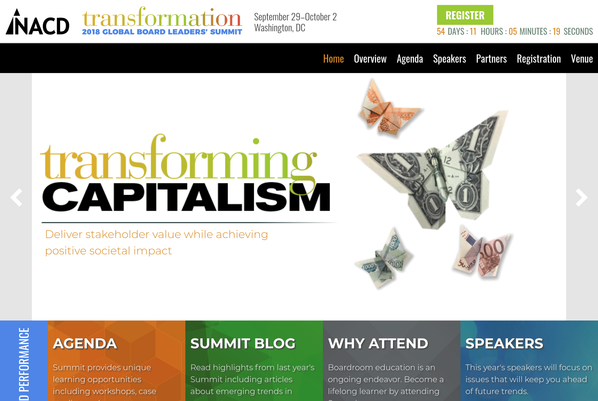
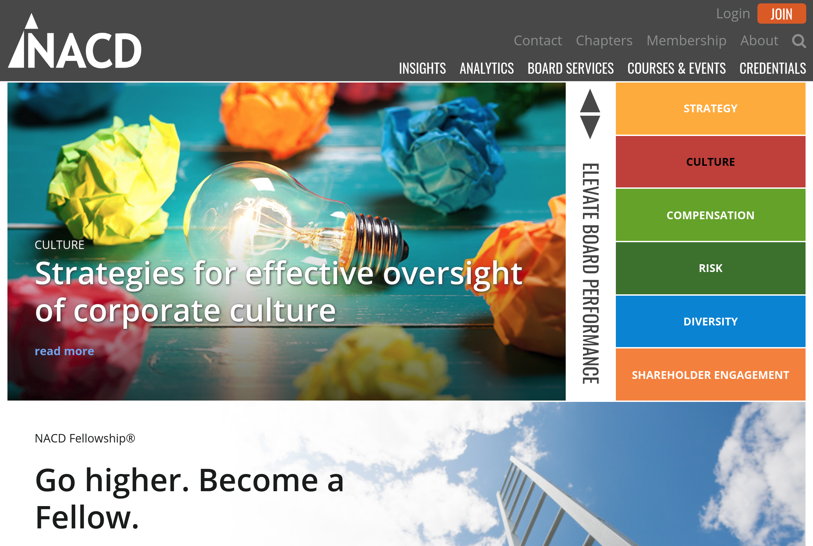
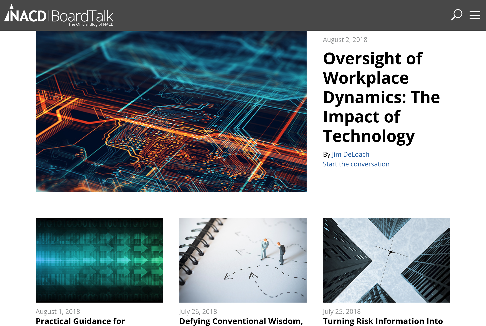

About
TL;DR Currently based in the District of Columbia, I am enthustiastic about building business applications, learning new technologies, solving problems and helping others along the way.
I grew up in a small town, with big ideas. However, living in the city and developing on the web seemed like a far fetched idea for this guy in highschool. Determination, willingness to learn, grow as a person and surrounding myself with great people has lead me to a career that I love. I have played sports for a majority of my life, so working as a team player is second nature. One thing I have learned to embrace over the years is diversity and culture. Together we can get to where we want to go. I am always looking for oppurtunities to work with people who are passionate and want to achieve the impossible.
I like learning on the job and in my free time. I am extremly motivated. Some of my favorite challenges are exploring cutting edge Javascript, mashing up REST APIs, quick prototyping, breaking down massive problems into managable puzzles and helping people get to the next level.
Projects
NACD Global Board Leaders Summit Microsite
- Vue.js
- Coldfusion
- REST API
- Wordpress
- Salesforce
nacdonline.org (redesign)
- Vue.js
- Coldfusion
- Salesforce
- REST API
blog.nacdonline.org (redesign)
- Vue SSR
- Node.js
- Express.js
- Wordpress
- REST API
- Headless CMS
DOMO Contact/Account Application

- Vue.js
- REST API
- DOMO
DOMO Data Connector

- Vue.js
- REST API
- DOMO
- Nodes.js
- Express.js
- Coldfusion
Experience
LEAD WEB DEVELOPER - NATIONAL ASSOCIATION OF CORPORATE DIRECTORS (NACD)
Responsible for managing and maintaining our web properties, including nacdonline.org, chapter subdomains, blog, internal DOMO applications and front-end support for Salesforce portal. Additional responsibilities include implementing DevOps/productivity strategies, code reviews and knowledge transfer to teammates.
WEB DEVELOPER - NATIONAL ASSOCIATION OF CORPORATE DIRECTORS (NACD)
Responsible for day to day maintenance and development of www.nacdonline.org and assisting with development on our force.com(Salesforce) member portal. Lead developer for development of our annual conference(Global Board Leaders Summit) microsite redesign. Additional responsibilities include planning and providing guidance to buisness units in preparation for development.
FUNDS TRANSFER REPRESENTATIVE - BANK-FUND STAFF FEDERAL CREDIT UNION
Perform quality assurance, fraud mitigation, and wire investigation support for member facing staff.
ACCOUNTS AND IT ADMINISTRATOR - VIOLA ENGINEERING, PC
Responsibilities included web administrator, development of custom project management work flow, Employee Handbook, and system for recovering delinquent client accounts.
ASSISTANT MANAGER - TRAVELEX CURRENCY SERVICES
Responsible for liaising with international banks to investigate lost wire transfers, designing up-sell/cross-sell system, designing and implementing electronic system for investigative reporting, regular branch liaison for corporate offices, and staff training for new products and systems.
CREDIT MANAGER - WELLS FARGO FINANCIAL
Duties included management of client's financial needs and goals based on cost/benefit analysis.
Education
COLLEGE OF WILLIAM AND MARY, WILLIAMSBURG, VA
BACHELOR OF ARTS IN ECONOMICS (2008)
Scholarship Athlete, Varsity Football (2003-2008), 2008 Quarterback Club Spirit Award for demonstration of leadership
Skills & Technology Stacks
Tech I use daily:
- HTML/CSS
- JavaScript
- Node.js
- Vue
- Express
- Coldfusion
- Git
- REST APIs
- Heroku
- DOMO
- Google Analytics
- Google Tag Manager
- Command Line
- Terminal
Tech I want to dive into:
- a11y
- mongoDB
- graph ql
- web sockets
- service workers
Tech I use occasionally:
- Salesforce
- Apex
- VisualForce
- SOQL
- PHP
- SQL
- MongoDB
- Redis
- Angular
- Adobe Illustrator